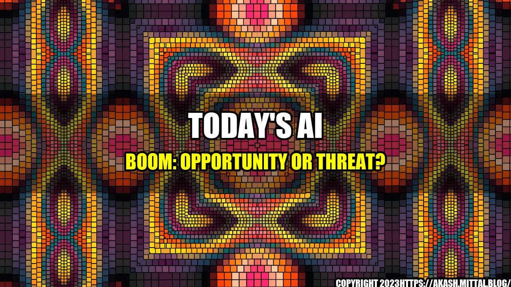

Today's AI Boom: Opportunity or Threat?
It was a hot summer day in New Delhi when I first witnessed the power of artificial intelligence. I was visiting a low-income area of the city, where power cuts were common and running water a luxury. The streets were noisy and crowded, and the air thick with the smell of exhaust fumes. As I walked down one of the narrow alleys, I noticed a small shop with a sign that read "AI-powered water purifiers."
Curious, I walked inside and saw a group of people gathered around a machine that looked like a refrigerator. A man was demonstrating how it worked. He poured some dirty water into a container, pressed a few buttons on a touchscreen, and within minutes, clean drinking water was flowing out of a faucet.
The Promise of AI
This was an impressive example of the potential of AI to solve real-world problems. In a country where millions of people lack access to clean water, this machine could make a huge difference. And it's not just water - AI is being used to improve healthcare, education, transportation, and many other areas of our lives.
The current AI boom is driven by huge amounts of investment from companies and governments around the world. According to a report from McKinsey, AI could generate up to $13 trillion in economic activity by 2030.
But this boom also raises some serious ethical concerns. As with any powerful technology, AI has the potential to be misused or to exacerbate existing social problems. In this article, we'll explore some of these issues and what can be done to address them.
The Dark Side of AI
One of the biggest risks of AI is the potential for discrimination. If the AI algorithms are trained on biased data, they are likely to replicate that bias in their decision-making. For example, a facial recognition program trained on data sets that are predominantly white and male is likely to perform poorly on people of color or women.
This can have serious consequences in areas such as hiring, criminal justice, and financial services. If an AI system is used to make decisions about who gets a loan, for example, and it consistently favors certain groups over others, it could perpetuate existing inequalities.
Another concern is privacy. As AI becomes more pervasive and collects more data about us, there's a risk that this information could be used for nefarious purposes. For example, an employer could use AI to analyze our social media activity and make hiring decisions based on our political beliefs or personal interests.
Finally, there's the risk of job displacement. As AI automation becomes more advanced, many jobs could be eliminated, leaving large numbers of people out of work. This could exacerbate existing economic inequalities and create new ones.
What Can be Done?
While it's clear that AI is not without its risks, there are steps that can be taken to mitigate these concerns. Here are three key areas to focus on:
- Transparency: AI systems need to be transparent in how they work and how they make decisions. This means that the code needs to be open for inspection, and the data used to train the algorithms needs to be diverse and representative.
- Accountability: Companies and governments need to be held accountable for the decisions made by AI systems. This means creating mechanisms for oversight and redress in cases where harm has been caused.
- Education and Reskilling: As AI automation eliminates jobs, it's important to invest in education and training programs to help people transition to new roles. This includes helping people develop skills that can't be easily automated, such as creativity, empathy, and critical thinking.
Of course, these are just a few of the potential solutions to the ethical challenges posed by AI. It's up to all of us - governments, companies, and individuals - to work together to ensure that the benefits of AI are realized while minimizing its risks.
Conclusion
The current AI boom offers incredible opportunities to solve some of the world's most pressing problems. But if we don't act now to address the ethical concerns surrounding AI, we risk amplifying existing social problems and creating new ones.
By focusing on transparency, accountability, and education, we can ensure that AI is used for good and not for harm. It's up to all of us to take responsibility and shape the future of AI in a way that benefits society as a whole.
References
- McKinsey. (2018). Artificial Intelligence: the Next Digital Frontier?. [online] Available at: https://www.mckinsey.com/featured-insights/artificial-intelligence/global-ai-survey-ai-proves-its-worth-but-few-scale-impact [Accessed 13 Aug. 2021].
- Schneier, B. (2020). The Growing Problem of AI Bias. [online] Scientific American. Available at: https://www.scientificamerican.com/article/the-growing-problem-of-ai-bias/ [Accessed 13 Aug. 2021].
- Brynjolfsson, E. and Mitchell, T. (2017). What can machine learning do? Workforce implications. [online] Science. Available at: https://science.sciencemag.org/content/358/6370/1530 [Accessed 13 Aug. 2021].
Hashtags
- #AI
- #ethics
- #socialproblems
- #transparency
- #accountability
- #education
- #reskilling
Category
Technology
Curated by Team Akash.Mittal.Blog
Share on Twitter Share on LinkedIn